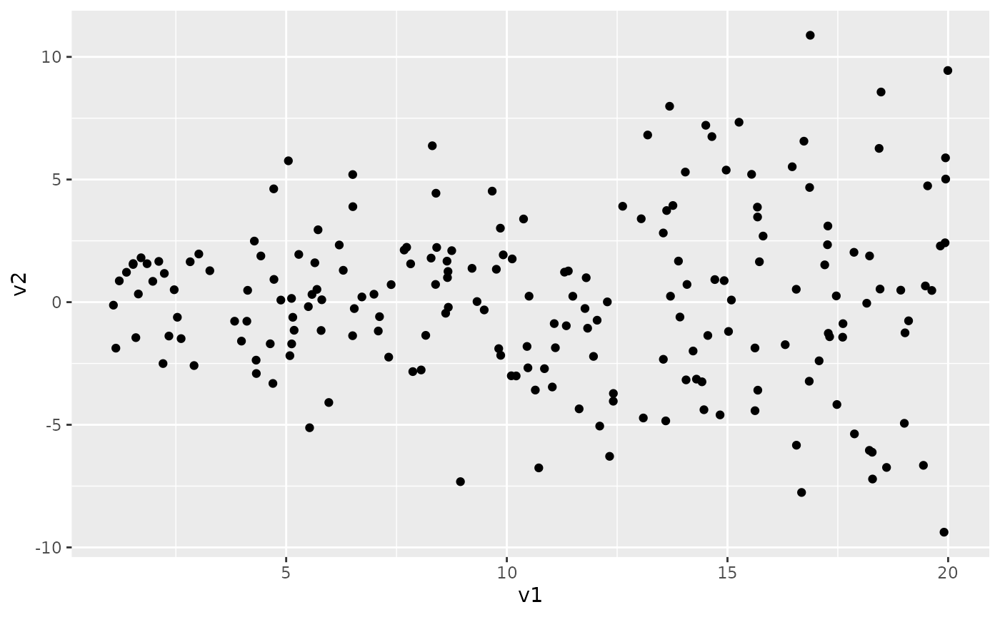
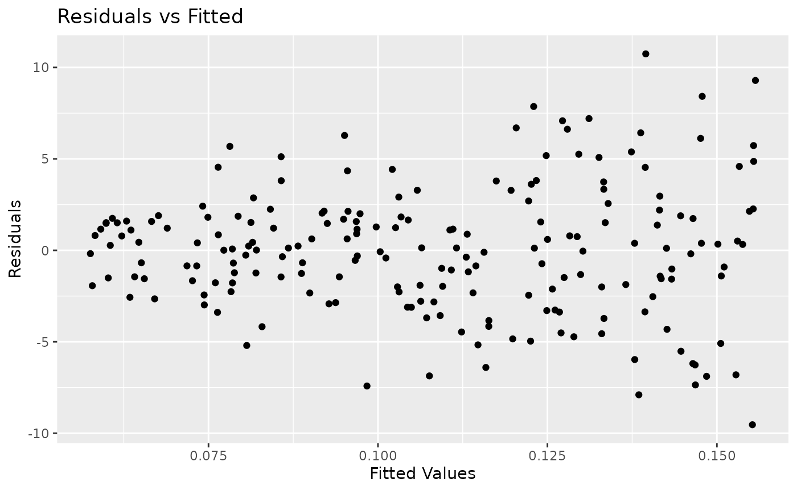
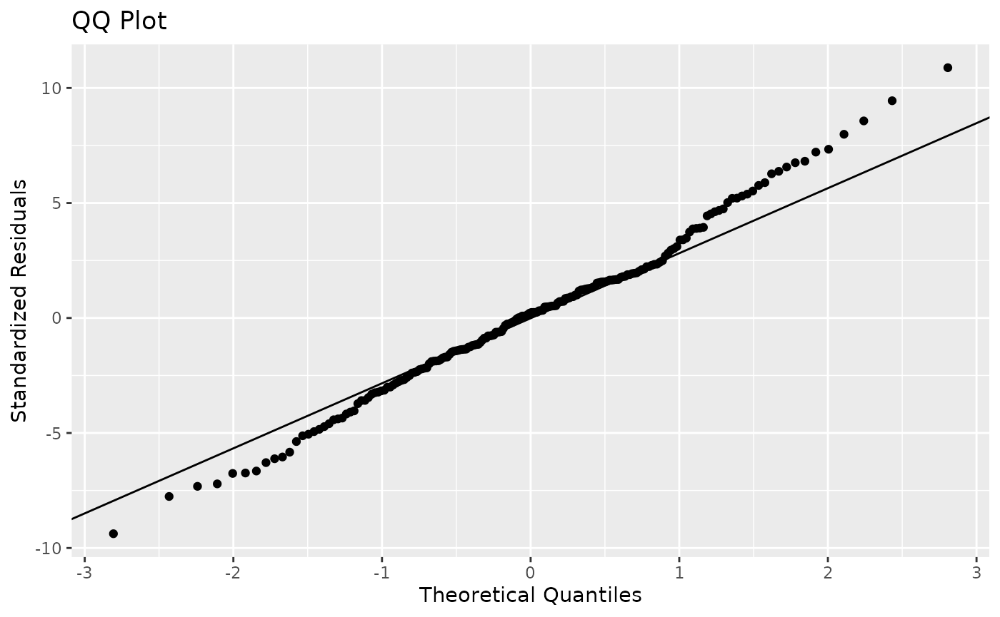
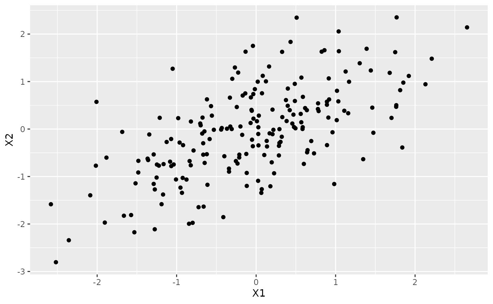
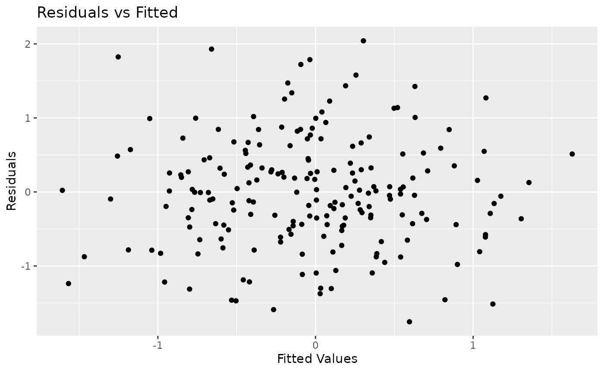
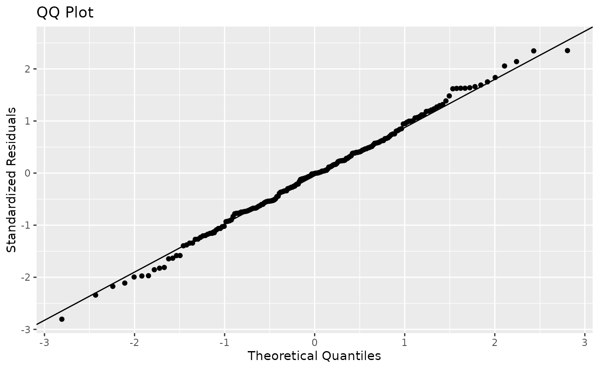

Unequal_Variances
Unequal_Variances.Rmd
# library(edsamplr)
# library(tidyverse)
# library(ggplot2)
# library(gt)While it is nice to use real research to demonstrate concepts for students, not all concepts are found in published articles. For instance, you may want to teach your students about what happens when we do not meet conditions for valid inference. In an introductory statistics class, you are introducing students to these conditions, possibly for the first time. I am sure you try to impress on them the importance of meeting the conditions, but it can be beneficial to show the consequences of not meeting them.
For example, you might want to teach about not having equal
variances. For this, we can use two edsamplr functions:
generate_heteroscedastic() and
generate_correlated(). For the first set of data with
unequal variances, you can simulate data with your preferred degree of
heteroscedasticity. I picked a very high degree for this example because
I remember needing that extreme view when I was an introductory
statistics student.
unequal_var_data <- generate_heteroscedastic(n = 200, degree = 4)For this sample, I selected a sample size of 200. Here are the summary statistics for both variables and a scatterplot.
unequal_var_data %>%
pivot_longer(everything(), names_to = "Variable", values_to = "Value") %>%
group_by(Variable) %>%
summarize(min = round(min(Value),2),
q1 = round(quantile(Value, 0.25),2),
median = round(median(Value),2),
q3 = round(quantile(Value, 0.75),2),
max = round(max(Value),2),
mean = round(mean(Value),2),
sd = round(sd(Value),2)) %>%
gt(rowname_col = "Variable")| min | q1 | median | q3 | max | mean | sd | |
|---|---|---|---|---|---|---|---|
| v1 | 1.09 | 5.93 | 10.94 | 15.62 | 19.99 | 10.85 | 5.48 |
| v2 | -9.38 | -1.92 | 0.23 | 1.90 | 10.88 | 0.11 | 3.46 |
unequal_var_data %>%
ggplot(aes(x = v1, y = v2)) +
geom_point()
I then did a simple linear regression and plotted the residual-fit plot and the QQ plot. You can see the clearly see the heteroscedasticity.
unequal_var_model <- lm(v2 ~ v1, data = unequal_var_data)
summary(unequal_var_model)
#>
#> Call:
#> lm(formula = v2 ~ v1, data = unequal_var_data)
#>
#> Residuals:
#> Min 1Q Median 3Q Max
#> -9.5345 -2.0305 0.1157 1.8121 10.7423
#>
#> Coefficients:
#> Estimate Std. Error t value Pr(>|t|)
#> (Intercept) 0.051946 0.544605 0.095 0.924
#> v1 0.005189 0.044815 0.116 0.908
#>
#> Residual standard error: 3.467 on 198 degrees of freedom
#> Multiple R-squared: 6.77e-05, Adjusted R-squared: -0.004982
#> F-statistic: 0.0134 on 1 and 198 DF, p-value: 0.9079
unequal_var_model %>%
ggplot(aes(x = .fitted, y = .resid)) +
geom_point() +
labs(title = "Residuals vs Fitted",
x = "Fitted Values",
y = "Residuals")
#> Warning: `fortify(<lm>)` was deprecated in ggplot2 4.0.0.
#> ℹ Please use `broom::augment(<lm>)` instead.
#> ℹ The deprecated feature was likely used in the ggplot2 package.
#> Please report the issue at <https://github.com/tidyverse/ggplot2/issues>.
#> This warning is displayed once per session.
#> Call `lifecycle::last_lifecycle_warnings()` to see where this warning was
#> generated.
unequal_var_model %>%
ggplot(aes(sample = v2)) +
stat_qq() +
stat_qq_line() +
labs(title = "QQ Plot",
x = "Theoretical Quantiles",
y = "Standardized Residuals")
In comparison, we have another sample with equal variances. I have
replicated everything from above except that I used the
generate_correlated() function.
equal_var_data <- generate_correlated(n = 200, r = 0.67,
slope = 0.7, summary = FALSE)
equal_var_data %>%
pivot_longer(everything(), names_to = "Variable", values_to = "Value") %>%
group_by(Variable) %>%
summarize(min = round(min(Value),2),
q1 = round(quantile(Value, 0.25),2),
median = round(median(Value),2),
q3 = round(quantile(Value, 0.75),2),
max = round(max(Value),2),
mean = round(mean(Value),2),
sd = round(sd(Value),2)) %>%
gt(rowname_col = "Variable")| min | q1 | median | q3 | max | mean | sd | |
|---|---|---|---|---|---|---|---|
| X1 | -2.58 | -0.71 | -0.03 | 0.58 | 2.65 | -0.05 | 0.99 |
| X2 | -2.80 | -0.67 | -0.01 | 0.57 | 2.35 | -0.04 | 0.96 |
equal_var_data %>%
ggplot(aes(x = X1, y = X2)) +
geom_point()
equal_var_model <- lm(X2 ~ X1, data = equal_var_data)
summary(equal_var_model)
#>
#> Call:
#> lm(formula = X2 ~ X1, data = equal_var_data)
#>
#> Residuals:
#> Min 1Q Median 3Q Max
#> -1.75412 -0.45148 -0.00787 0.45295 2.04176
#>
#> Coefficients:
#> Estimate Std. Error t value Pr(>|t|)
#> (Intercept) -0.01088 0.05285 -0.206 0.837
#> X1 0.61776 0.05362 11.520 <2e-16 ***
#> ---
#> Signif. codes: 0 '***' 0.001 '**' 0.01 '*' 0.05 '.' 0.1 ' ' 1
#>
#> Residual standard error: 0.7464 on 198 degrees of freedom
#> Multiple R-squared: 0.4013, Adjusted R-squared: 0.3983
#> F-statistic: 132.7 on 1 and 198 DF, p-value: < 2.2e-16
equal_var_model %>%
ggplot(aes(x = .fitted, y = .resid)) +
geom_point() +
labs(title = "Residuals vs Fitted",
x = "Fitted Values",
y = "Residuals")
equal_var_model %>%
ggplot(aes(sample = X2)) +
stat_qq() +
stat_qq_line() +
labs(title = "QQ Plot",
x = "Theoretical Quantiles",
y = "Standardized Residuals")
You (or your students!) can replicate this simulation or change up the values in the arguments to test different scenarios. You can also have them plug in various values of X to see how accurate the models’ predictions are.